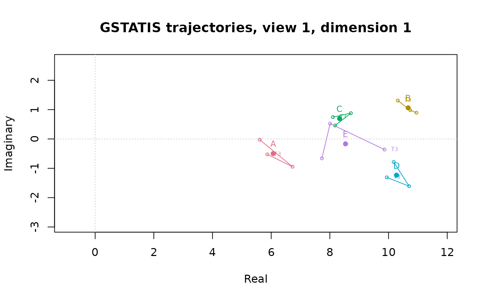

GSTATIS: STATIS for a set of asymmetric matrices via Hermitian forms
Source:R/gstatis_mds.R
gstatis_mds.RdA set of q square asymmetric matrices on the same n objects (e.g. the
same group rated at q occasions) is analyzed in three steps, following
the revised version of GSTATIS (Chino, Grorud, & Yoshino).
Arguments
- x
A list of square matrices with the same labels, or an
n x n x Tarray.- ndim
Number of complex dimensions to keep.
- ncomp
Number of compromises (points of view) to build. Use
ncomp = NULLwiththresholdto keep every RV component whose eigenvalue exceedsthreshold, as in the 2001 program.- threshold
Eigenvalue threshold used when
ncomp = NULL.- scale
"none"(default, as in Chino's program) or"norm"(eachH_idivided by its Frobenius norm before step 2, the usual STATIS normalization).- rotate
Rotation of each complex plane; see
hfm_mds().- project
"row"(default, as in Chino's program) or"column": which vectors ofH_iare projected in step 3.- missing, impute_ndim, tol, maxit
Handling of missing values in each source, as in
hfm_mds(). An object absent at a source (whole row and column missing) is an error.
Value
An object of class c("mdspace_gstatis", "mdspace") with
conf, coord, eigen, gof, unexplained (as in hfm_mds(), for the
first compromise), rv (RV matrix), rv_eigen (its eigenvalues and
vectors), weights (q x ncomp), compromise (list, one per point of
view, each with the HFM of Xi_a, its trajectory, lpnorm, and
distance, the Frobenius distance ||H_i - Xi_a|| for each source),
trajectory and lpnorm (those of the first point of view; complex
array n x ndim x q and array q x q x n), and occasion (HFM of each
source, see hfm_mds()).
Details
Inter-structure. Each matrix is turned into its Hermitian form
H_i = S_i + iK_i. The generalized RV coefficient between sources isGRV(H_i, H_i') = tr(H_i H_i') / sqrt(tr(H_i^2) tr(H_i'^2)), and theq x qGRV matrix is eigen-decomposed.Intra-structure. The
a-th eigenvectorbeta_aof the GRV matrix gives the weights of the compromiseXi_a = sum_i beta_ia H_i, which is analyzed by HFM (seehfm_mds()). The sign of an eigenvector is arbitrary:beta_1is signed so that its sum is positive, and each laterbeta_aso that its largest element in absolute value is positive. Flippingbeta_anegatesXi_a, which swaps positive and negative planes and so turns the trajectories by 90 degrees.Trajectories (revised step 3). The
j-th row (or column) vectorh_jof eachH_iis projected onto the compromise configurationO_p = U |Psi|^{1/2}: the image isPsi^{-1/2} O_p* h_j, where a negative eigenvaluepsiis read assqrt(psi) = i sqrt(|psi|). With unit eigenvectorsUthis isD U* h_jwithD = 1for a positive and-ifor a negative eigenvalue. The distance between two sources for objectj,||Psi^{-1/2} O_p* (h_j^(i) - h_j^(i'))||, is returned inlpnorm.
The results reproduce the FORTRAN program by N. Chino (output of
1999-12-30): the GRV matrix, its eigenvalues and eigenvectors, the
eigenvalues of the compromises, and all the trajectories (the program
prints each object's trajectory divided by its largest norm over sources;
see plot(..., scale = "max")).
References
Chino, N., Grorud, A., & Yoshino, R. (1996). A complex analysis for two-mode three-way asymmetric relational data. Abstracts of the talks at the 5th Conference of the International Federation of Classification Societies, Vol. 2, 83-86.
Chino, N., Grorud, A., & Yoshino, R. A revised version of GSTATIS. Proceedings of the Annual Meeting of the Behaviormetric Society of Japan, 409-412.
Lavit, C., Escoufier, Y., Sabatier, R., & Traissac, P. (1994). The ACT (STATIS method). Computational Statistics & Data Analysis, 18, 97-119.
Examples
set.seed(1)
base <- matrix(sample(1:7, 25, TRUE), 5, 5, dimnames = list(LETTERS[1:5], LETTERS[1:5]))
xs <- lapply(1:3, function(t) base + matrix(sample(-1:1, 25, TRUE), 5, 5))
fit <- gstatis_mds(xs, ndim = 2)
fit
#> mdspace: gstatis
#> Call: gstatis_mds(x = xs, ndim = 2)
#> Objects: 5 Dimensions: 2
#> Occasions: 3 Points of view: 1
#>
#> RV eigenvalues (interstructure):
#> [,1] [,2] [,3]
#> eigenvalue 2.9529 0.0238 0.0233
#> share 0.9843 0.0079 0.0078
#>
#> Weights of the first compromise (GRV eigenvector):
#> T1 T2 T3
#> 0.5773 0.5773 0.5774
#>
#> First compromise, Unexplained SS (1 - cumulative GOF): 0.0525
#> D1 D2
#> eigenvalue 35.0422 -13.4857
#> gof 0.8252 0.1222
#> cumulative 0.8252 0.9475
plot(fit, type = "trajectory", dim = 1)
